Cat Breeds gallery
Find what breed will be the best fit for your lifestyle!
It's important to note that you do not need to adopt purebred cat; there are plenty of shelter cats who make wonderful pets as well. This is just a resource to familiarize yourself with the breeds out there.
| Short Hair | Medium Hair | Long Hair |
|---|---|---|
British Shorthair 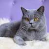 Temperamant: MellowSize: LargeColor: Any (commonly blue)Children? With care |
Bengal 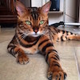 Temperamant: Active, wildcat-likeSize: LargeColor: Brown spottedChildren? Not ideal |
Persian 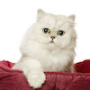 Temperamant: GentleSize: Medium/LargeColor: AnyChildren? Absolutely |
Siamese (Modern+Traditional) 
Temperamant: Active and NoisySize: MediumColor: Any in "Pointed" patternChildren? Yes |
Manx 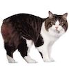 Temperamant: Friendly, medium activeSize: MediumColor: AnyChildren? Absolutely |
Ragdoll 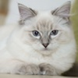 Temperamant: Docile, relaxedSize: LargeColor: Any "pointed" colorsChildren? Absolutely |
Abyssinian 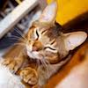 Temperamant: Active, CuriousSize: Small/MediumColor: Tans, browns, red, blueChildren? Yes |
Turkish Van 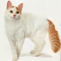 Temperamant: Rugged, Athletic, LoyalSize: LargeColor: White with patches of colorChildren? With care |
Maine Coon 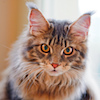 Temperamant: Friendly, Easy-GoingSize: X-LargeColor: Any except pointedChildren? Absolutely |
Scottish Fold 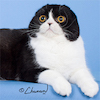 Temperamant: Affectionate, calmSize: Small/MediumColor: AnyChildren? Absolutely |
American Bobtail 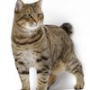 Temperamant: Calm, hardySize: MediumColor: AnyChildren? Absolutely |
Turkish Angora 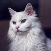 Temperamant: Shy, gentle, gracefulSize: Small/MediumColor: AnyChildren? With care |
Sphynx (Hairless) 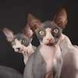 Temperamant: Friendly, activeSize: SmallColor: AnyChildren? Cautiously |
Somali 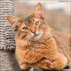 Temperamant: Active, independent, smartSize: Small/MediumColor: Tan, red, blueChildren? Yes |
Birman 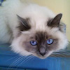 Temperamant: Mellow, friendlySize: Medium/LargeColor: PointedChildren? Yes |
Exotic Shorthair Temperamant: Laid-back, sweetSize: MediumColor: AnyChildren? Yes |
Siberian 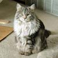 Temperamant: Playful, loyal, sweetSize: LargeColor: AnyChildren? Absolutely |
Norwegian Forest 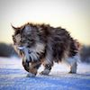 Temperamant: Playful, active, friendlySize: LargeColor: AnyChildren? Absolutely |
What is a pointed coat?
Point coloration refers to a cat with a pale body and relatively darker extremities, i.e. the face, ears, feet, tail. It is most recognized as the coloration of Siamese and related breeds of cat.
Note: Long-Haired cat breeds require lots of special attention and grooming